Lecture 2: Development Infrastructure & Tooling
Lecture by Sergey Karayev.
Notes by James Le and Vishnu Rachakonda.
Published August 15, 2022.
Download slides.
1 - Introduction
The dream of ML development is that given a project spec and some sample data, you get a continually improving prediction system deployed at scale.
The reality is starkly different:
-
You have to collect, aggregate, process, clean, label, and version the data.
-
You have to find the model architecture and their pre-trained weights and then write and debug the model code.
-
You run training experiments and review the results, which will be fed back into the process of trying out new architectures and debugging more code.
-
You can now deploy the model.
-
After model deployment, you have to monitor model predictions and close the data flywheel loop. Basically, your users generate fresh data for you, which needs to be added to the training set.
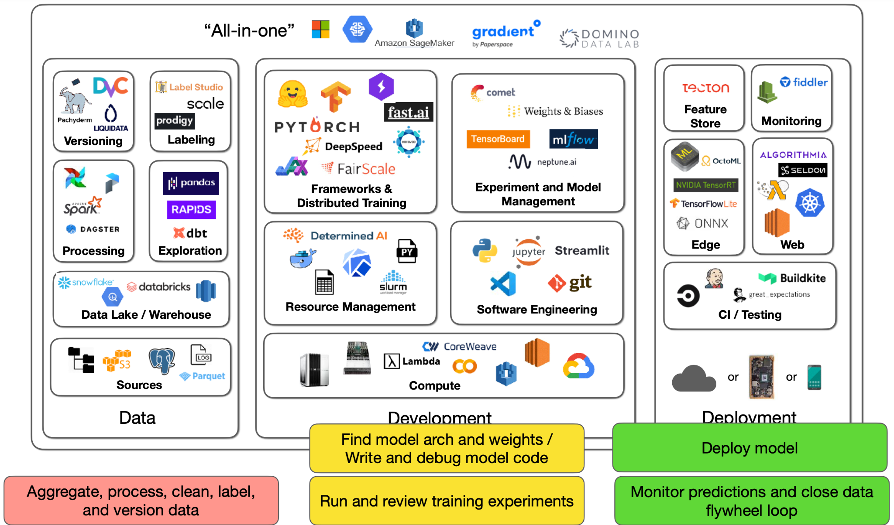
This reality has roughly three components: data, development, and deployment. The tooling infrastructure landscape for them is large, so we'll have three lectures to cover it all. This lecture focuses on the development component.
2 - Software Engineering
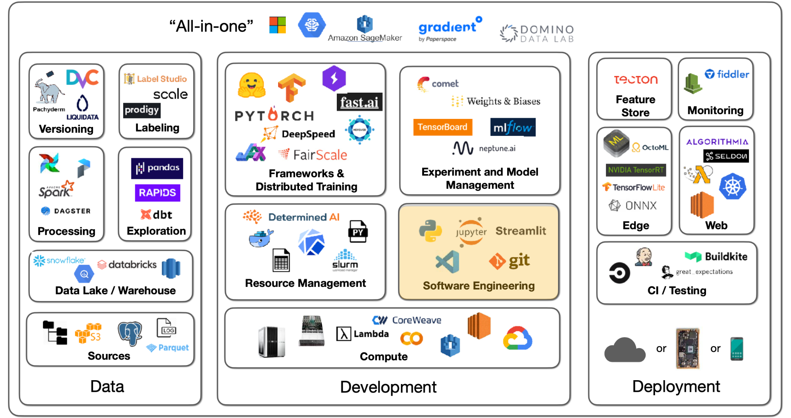
Language
For your choice of programming language, Python is the clear winner in scientific and data computing because of all the libraries that have been developed. There have been some contenders like Julia and C/C++, but Python has really won out.
Editors
To write Python code, you need an editor. You have many options, such as Vim, Emacs, Jupyter Notebook/Lab, VS Code, PyCharm, etc.
-
We recommend VS Code because of its nice features such as built-in git version control, documentation peeking, remote projects opening, linters and type hints to catch bugs, etc.
-
Many practitioners develop in Jupyter Notebooks, which is great as the "first draft" of a data science project. You have to put in little thought before you start coding and seeing the immediate output. However, notebooks have a variety of problems: primitive editor, out-of-order execution artifacts, and challenges to version and test them. A counterpoint to these problems is the nbdev package that lets you write and test code all in one notebook environment.
-
We recommend you use VS Code with built-in support for notebooks - where you can write code in modules imported into notebooks. It also enables awesome debugging.
If you want to build something more interactive, Streamlit is an excellent choice. It lets you decorate Python code, get interactive applets, and publish them on the web to share with the world.
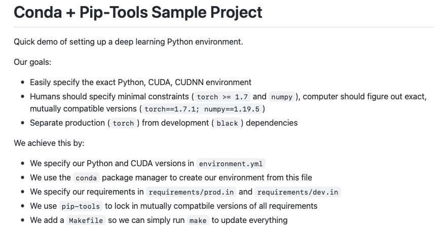
For setting up the Python environment, we recommend you see how we did it in the lab.
3 - Deep Learning Frameworks
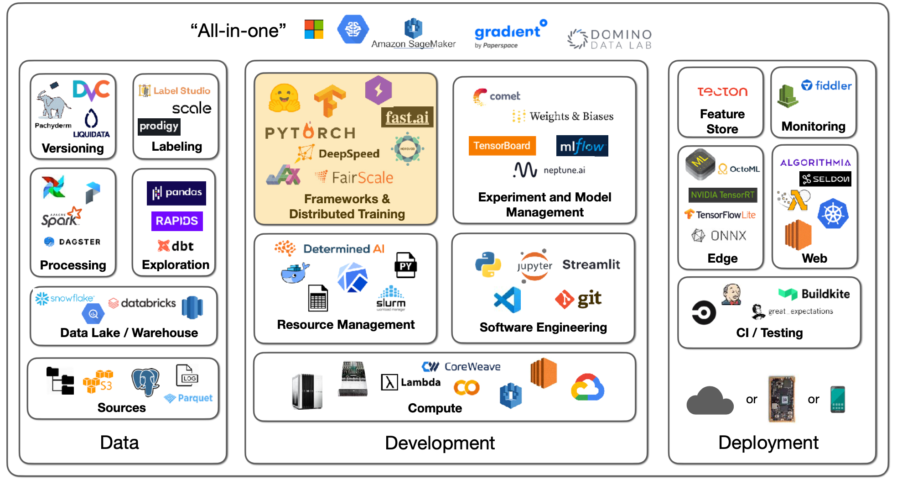
Deep learning is not a lot of code with a matrix math library like Numpy. But when you have to deploy your code onto CUDA for GPU-powered deep learning, you want to consider deep learning frameworks as you might be writing weird layer types, optimizers, data interfaces, etc.
Frameworks
There are various frameworks, such as PyTorch, TensorFlow, and Jax. They are all similar in that you first define your model by running Python code and then collect an optimized execution graph for different deployment patterns (CPU, GPU, TPU, mobile).
-
We prefer PyTorch because it is absolutely dominant by measures such as the number of models, the number of papers, and the number of competition winners. For instance, about 77% of 2021 ML competition winners used PyTorch.
-
With TensorFlow, you have TensorFlow.js (that lets you run deep learning models in your browser) and Keras (an unmatched developer experience for easy model development).
-
Jax is a meta-framework for deep learning.
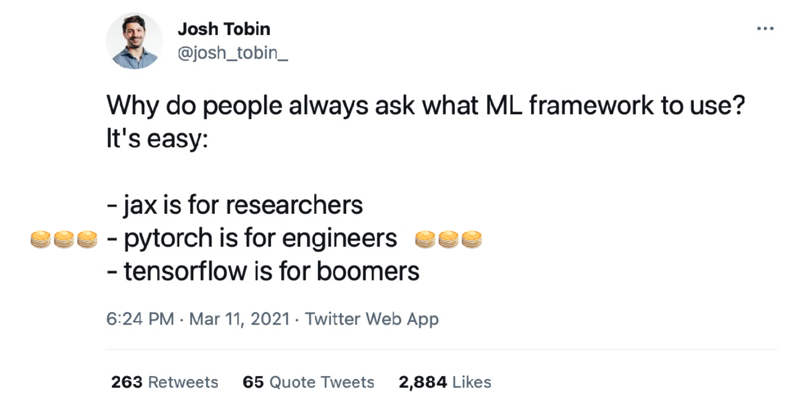
PyTorch has excellent developer experience and is production-ready and even faster with TorchScript. There is a great distributed training ecosystem. There are libraries for vision, audio, etc. There are also mobile deployment targets.
PyTorch Lightning provides a nice structure for organizing your training code, optimizer code, evaluation code, data loaders, etc. With that structure, you can run your code on any hardware. There are nice features such as performance and bottleneck profiler, model checkpointing, 16-bit precision, and distributed training libraries.
Another possibility is FastAI software, which is developed alongside the fast.ai course. It provides many advanced tricks such as data augmentations, better initializations, learning rate schedulers, etc. It has a modular structure with low-level API, mid-level API, high-level API, and specific applications. The main problem with FastAI is that its code style is quite different from mainstream Python.
At FSDL, we prefer PyTorch because of its strong ecosystem, but TensorFlow is still perfectly good. If you have a specific reason to prefer it, you are still going to have a good time.
Jax is a more recent project from Google that is not specific to deep learning. It provides general vectorization, auto-differentiation, and compilation to GPU/TPU code. For deep learning, there are separate frameworks like Flax and Haiku. You should only use Jax for a specific need.
Meta-Frameworks and Model Zoos
Most of the time, you will start with at least a model architecture that someone has developed or published. You will use a specific architecture (trained on specific data with pre-trained weights) on a model hub.
-
ONNX is an open standard for saving deep learning models and lets you convert from one type of format to another. It can work well but can also run into some edge cases.
-
HuggingFace has become an absolutely stellar repository of models. It started with NLP tasks but has then expanded into all kinds of tasks (audio classification, image classification, object detection, etc.). There are 60,000 pre-trained models for all these tasks. There is a Transformers library that works with PyTorch, TensorFlow, and Jax. There are 7,500 datasets uploaded by people. There's also a community aspect to it with a Q&A forum.
-
TIMM is a collection of state-of-the-art computer vision models and related code that looks cool.
4 - Distributed Training
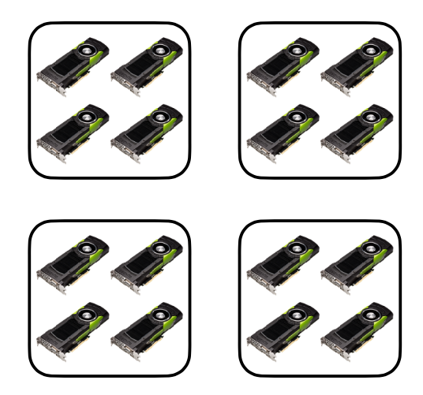
Let's say we have multiple machines represented by little squares above (with multiple GPUs in each machine). You are sending batches of data to be processed by a model with parameters. The data batch can fit on a single GPU or not. The model parameters can fit on a single GPU or not.
The best case is that both your data batch and model parameters fit on a single GPU. That's called trivial parallelism. You can either launch more independent experiments on other GPUs/machines or increase the batch size until it no longer fits on one GPU.
Data Parallelism
If your model still fits on a single GPU, but your data no longer does, you have to try out data parallelism - which lets you distribute a single batch of data across GPUs and average gradients that are computed by the model across GPUs. A lot of model development work is cross-GPU, so you want to ensure that GPUs have fast interconnects.
If you are using a server card, expect a linear speedup in training time. If you are using a consumer card, expect a sublinear speedup instead.
Data parallelism is implemented in PyTorch with the robust DistributedDataParallel library. Horovod is another 3rd-party library option. PyTorch Lightning makes it dead simple to use either of these two libraries - where speedup seems to be the same.
A more advanced scenario is that you can't even fit your model on a single GPU. You have to spread the model over multiple GPUs. There are three solutions to this.
Sharded Data-Parallelism
Sharded data parallelism starts with the question: What exactly takes up GPU memory?
-
The model parameters include the floats that make up our model layers.
-
The gradients are needed to do back-propagation.
-
The optimizer states include statistics about the gradients
-
Finally, you have to send a batch of data for model development.
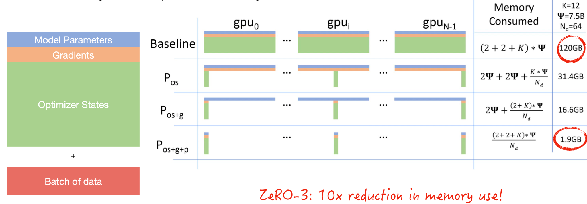
Sharding is a concept from databases where if you have one source of data, you actually break it into shards of data that live across your distributed system. Microsoft implemented an approach called ZeRO that shards the optimizer states, the gradients, and the model parameters. This results in an insane order of magnitude reduction in memory use, which means your batch size can be 10x bigger. You should watch the video in this article to see how model parameters are passed around GPUs as computation proceeds.
Sharded data-parallelism is implemented by Microsoft's DeepSpeed library and Facebook's FairScale library, as well as natively by PyTorch. In PyTorch, it's called Fully-Sharded DataParallel. With PyTorch Lightning, you can try it for a massive memory reduction without changing the model code.
This same ZeRO principle can also be applied to a single GPU. You can train a 13B-parameter model on a single V100 (32GB) GPU. Fairscale implements this (called CPU-offloading).
Pipelined Model-Parallelism
Model parallelism means that you can put each layer of your model on each GPU. It is trivial to implement natively but results in only one GPU being active at a time. Libraries like DeepSpeed and FairScale make it better by pipelining computation so that the GPUs are fully utilized. You need to tune the amount of pipelining on the batch size to the exact degree of how you will split up the model on the GPU.
Tensor-Parallelism
Tensor parallelism is another approach, which observes that there is nothing special about matrix multiplication that requires the whole matrix to be on one GPU. You can distribute the matrix over multiple GPUs. NVIDIA published the Megatron-LM repo, which does this for the Transformer model.
You can actually use all of the three techniques mentioned above if you really want to scale a huge model (like a GPT-3 sized language model). Read this article on the technology behind BLOOM training for a taste.
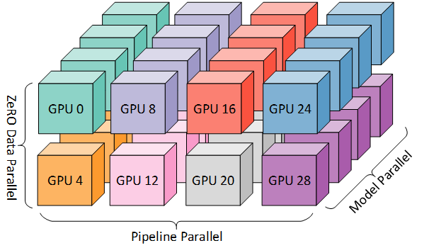
In conclusion:
-
If your model and data fit on one GPU, that's awesome.
-
If they do not, and you want to speed up training, try DistributedDataParallel.
-
If the model still doesn't fit, try ZeRO-3 or Full-Sharded Data Parallel.
For more resources to speed up model training, look at this list compiled by DeepSpeed, MosaicML, and FFCV.
5 - Compute
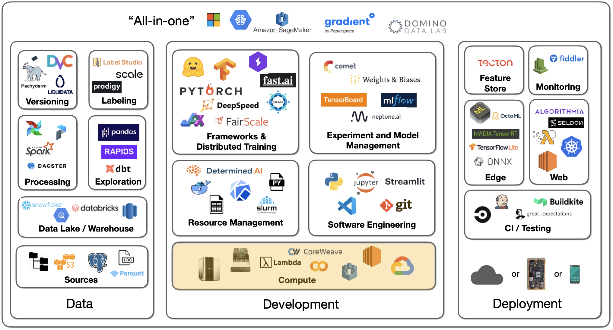
Compute is the next essential ingredient to developing machine learning models and products.
The compute-intensiveness of models has grown tremendously over the last ten years, as the below charts from OpenAI and HuggingFace show.
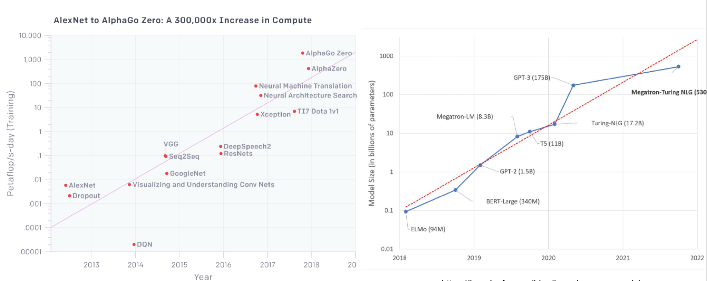
Recent developments, including models like GPT-3, have accelerated this trend. These models are extremely large and require a large number of petaflops to train.
GPUs
To effectively train deep learning models, GPUs are required. NVIDIA has been the superior choice for GPU vendors, though Google has introduced TPUs (Tensor Processing Units) that are effective but are only available via Google Cloud. There are three primary considerations when choosing GPUs:
-
How much data fits on the GPU?
-
How fast can the GPU crunch through data? To evaluate this, is your data 16-bit or 32-bit? The latter is more resource intensive.
-
How fast can you communicate between the CPU and the GPU and between GPUs?
Looking at recent NVIDIA GPUs, it becomes clear that a new high-performing architecture is introduced every few years. There's a difference between these chips, which are licensed for personal use as opposed to corporate use; businesses should only use server cards.
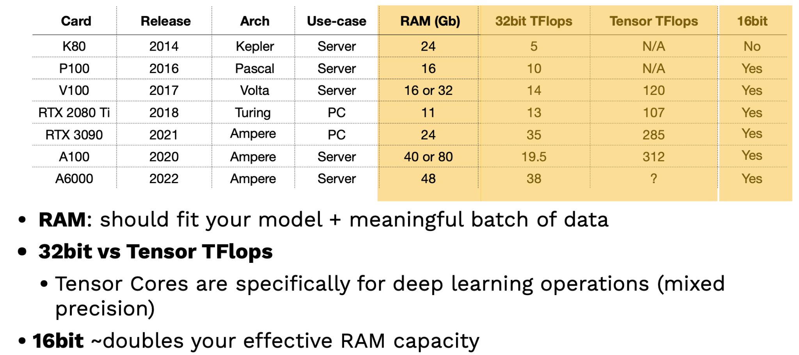
Two key factors in evaluating GPUs are RAM and Tensor TFlops. The more RAM, the better the GPU contains large models and datasets. Tensor TFlops are special tensor cores that NVIDIA includes specifically for deep learning operations and can handle more intensive mixed-precision operations. A tip: leveraging 16-bit training can effectively double your RAM capacity!
While these theoretical benchmarks are useful, how do GPUs perform practically? Lambda Labs offers the best benchmarks here. Their results show that the most recent server-grade NVIDIA GPU (A100) is more than 2.5 times faster than the classic V100 GPU. RTX chips also outperform the V100. AIME is also another source of GPU benchmarks.
Cloud services such as Microsoft Azure, Google Cloud Platform, and Amazon Web Services are the default place to buy access to GPUs. Startup cloud providers like Paperspace, CoreWeave, and Lambda Labs also offer such services.
TPUs
Let's briefly discuss TPUs. There are four generations of TPUs, and the most recent v4 is the fastest possible accelerator for deep learning. V4 TPUs are not generally available yet, but TPUs generally excel at scaling to larger and model sizes. The below charts compare TPUs to the fastest A100 NVIDIA chip.
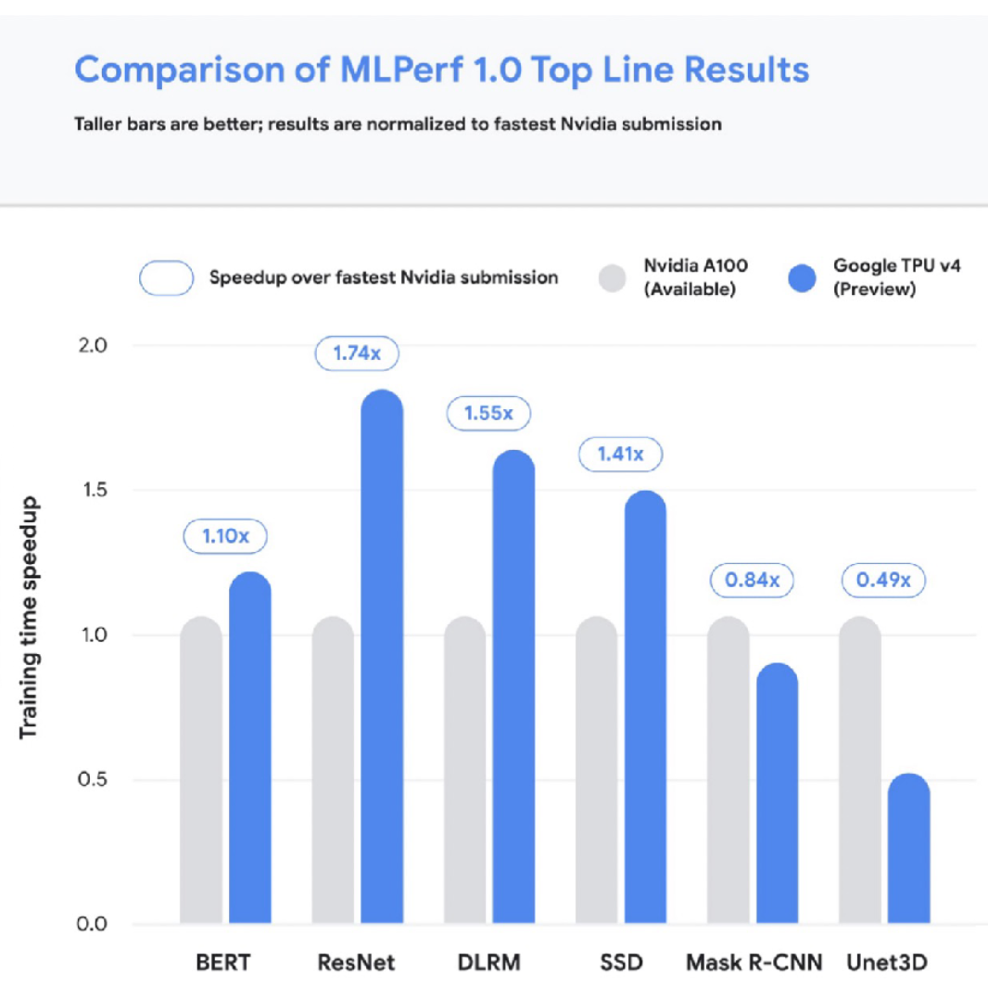
It can be overwhelming to compare the cost of cloud access to GPUs, so we made a tool that solves this problem! Feel free to contribute to our repository of Cloud GPU cost metrics. The tool has all kinds of nifty features like enabling filters for only the most recent chip models, etc.
If we combine the cost metrics with performance metrics, we find that the most expensive per hour chips are not the most expensive per experiment! Case in point: running the same Transformers experiment on 4 V100s costs $1750 over 72 hours, whereas the same experiment on 4 A100s costs $250 over only 8 hours. Think carefully about cost and performance based on the model you're trying to train.
Some helpful heuristics here are:
-
Use the most expensive per-hour GPU in the least expensive cloud.
-
Startups (e.g., Paperspace) tend to be cheaper than major cloud providers.
On-Prem vs. Cloud
For on-prem use cases, you can build your own pretty easily or opt for a pre-built computer from a company like NVIDIA. You can build a good, quiet PC with 128 GB RAM and 2 RTX 3090s for about $7000 and set it up in a day. Going beyond this can start to get far more expensive and complicated. Lambda Labs offers a $60,000 machine with 8 A100s (super fast!). Tim Dettmers offers a great (slightly outdated) perspective on building a machine here.
Some tips on on-prem vs. cloud use:
-
It can be useful to have your own GPU machine to shift your mindset from minimizing cost to maximizing utility.
-
To truly scale-out experiments, you should probably just use the most expensive machines in the least expensive cloud.
-
TPUs are worth experimenting with for large-scale training, given their performance.
-
Lambda Labs is a sponsor, and we highly encourage looking at them for on-prem and cloud GPU use!
6 - Resource Management
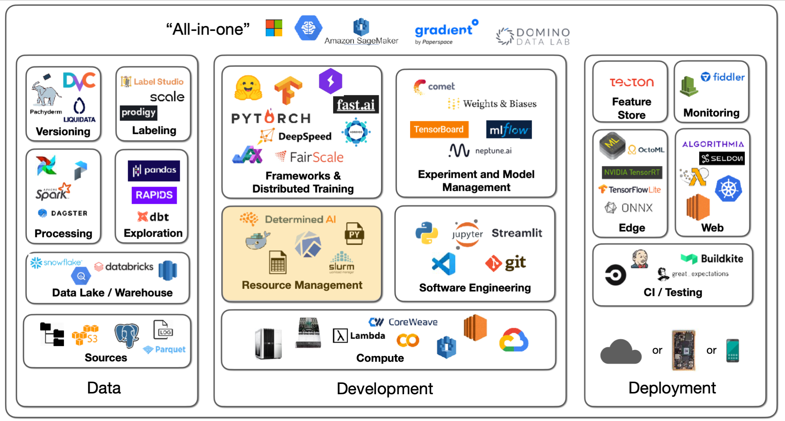
Now that we've talked about raw compute, let's talk about options for how to manage our compute resources. Let's say we want to manage a set of experiments. Broadly speaking, we'll need hardware in the form of GPUs, software requirements (e.g., PyTorch version), and data to train on.
Solutions
Leveraging best practices for specifying dependencies (e.g., Poetry, conda, pip-tools) makes the process of spinning up such experiments quick and easy on a single machine.
If, however, you have a cluster of machines to run experiments on, SLURM is the tried and true solution for workload management that is still widely used.
For more portability, Docker is a way to package up an entire dependency stack into a lighter-than-a-VM package. Kubernetes is the most popular way to run many Docker containers on top of a cluster. The OSS Kubeflow project helps manage ML projects that rely on Kubernetes.
These projects are useful, but they may not be the easiest or best choice. They're great if you already have a cluster up and running, but how do you actually set up a cluster or compute platform?
Before proceeding, FSDL prefers open source and/or transparently priced products. We discuss tools that fall into these categories, not SaaS with opaque pricing.
Tools
For practitioners all in on AWS, AWS Sagemaker offers a convenient end-to-end solution for building machine learning models, from labeling data to deploying models. Sagemaker has a ton of AWS-specific configuration, which can be a turnoff, but it brings a lot of easy-to-use old school algorithms for training and allows you to BYO algorithms as well. They're also increasing support for PyTorch, though the markup for PyTorch is about 15-20% more expensive.
Anyscale is a company created by the makers of the Berkeley OSS project Ray. Anyscale recently launched Ray Train, which they claim is faster than Sagemaker with a similar value proposition. Anyscale makes it really easy to provision a compute cluster, but it's considerably more expensive than alternatives.
Grid.ai is created by the PyTorch Lightning creators. Grid allows you to specify what compute parameters to use easily with "grid run" followed by the types of compute and options you want. You can use their instances or AWS under the hood. Grid has an uncertain future, as its future compatibility with Lightning (given their rebrand) has not been clarified.
There are several non-ML options for spinning up compute too! Writing your own scripts, using various libraries, or even Kubernetes are all options. This route is harder.
Determined.AI is an OSS solution for managing on-prem and cloud clusters. They offer cluster management, distributed training, and more. It's pretty easy to use and is in active development.
With all this said, there is still room to improve the ease of experience for launching training on many cloud providers.
7 - Experiment and Model Management
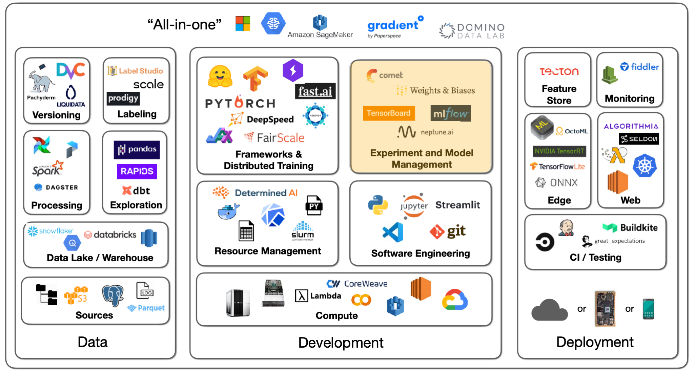
In contrast to compute, experiment management is quite close to being solved. Experiment management refers to tools and processes that help us keep track of code, model parameters, and data sets that are iterated on during the model development lifecycle. Such tools are essential to effective model development. There are several solutions here:
-
TensorBoard: A non-exclusive Google solution effective at one-off experiment tracking. It is difficult to manage many experiments.
-
MLflow: A non-exclusive Databricks project that includes model packaging and more, in addition to experiment management. It must be self-hosted.
-
Weights and Biases: An easy-to-use solution that is free for personal and academic projects! Logging starts simply with an "experiment config" command.
-
Other options include Neptune AI, Comet ML, and Determined AI, all of which have solid experiment tracking options.
Many of these platforms also offer intelligent hyperparameter optimization, which allows us to control the cost of searching for the right parameters for a model. For example, Weights and Biases has a product called Sweeps that helps with hyperparameter optimization. It's best to have it as part of your regular ML training tool; there's no need for a dedicated tool.
8 - "All-In-One"
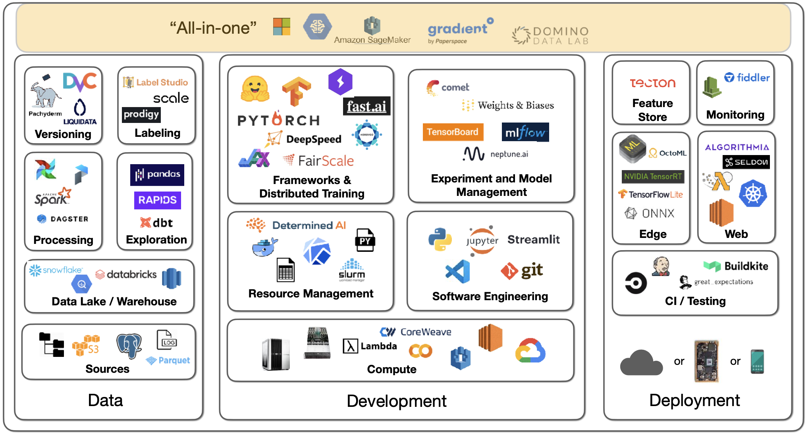
There are machine learning infrastructure solutions that offer everything--training, experiment tracking, scaling out, deployment, etc. These "all-in-one" platforms simplify things but don't come cheap! Examples include Gradient by Paperspace, Domino Data Lab, AWS Sagemaker, etc.
We are excited to share this course with you for free.
We have more upcoming great content. Subscribe to stay up to date as we release it.
We take your privacy and attention very seriously and will never spam you. I am already a subscriber